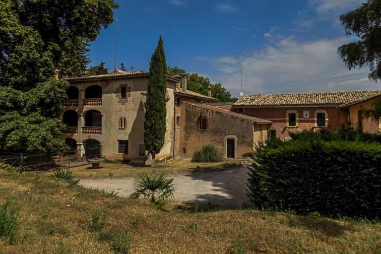

Visita · Seva
Significatiu exemple dels masos senyorials que poblen el terme de Seva, el més proper al nucli inicial del poble de Seva. Més enllà del nucli antic, és probablement l' indret més bonic de les…